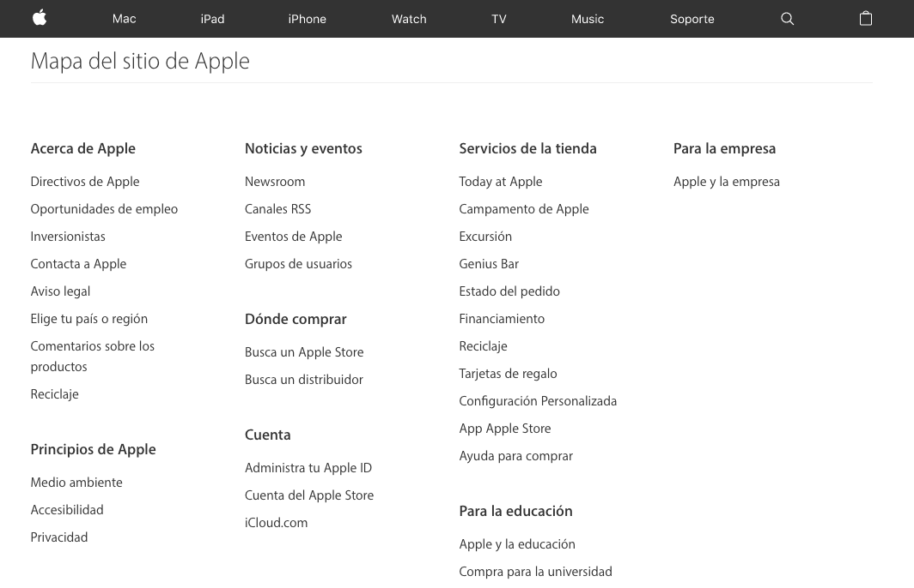

Es una forma de organizar el contenido y funciones de toda la página web, de forma que puedan ser encontrados rápidamente por el usuario, la arquitectura de la información considera la relación entre los contenidos de diferentes pantallas y a nivel particular, la organización de contenidos dentro de la misma pantalla
Es una forma de presentación, se emplean rótulos para representar partes de información en sitios web de manera eficaz.
Es la forma de llevar al usuario al lugar que necesita de forma rápida.
Es la estructura de enlaces de una página web, se recomienda realizar un esquema antes de comenzar con el diseño web para para ver si se tiene una buena o mala navegación y poder corregir. Una vez creado el sitio se recomienda hacer el mapa de sitio en formato XLM para posicionamiento en buscadores como Google de nuestro sitio web.
Tarea: Realiza un esquema de mapa de sitio de una página web (sorteo), especificando todos los puntos vistos en clase (Esquema de organización, rótulos y navegación) y menciona qué es lo que te gustó del sitio y qué odiaste. (stumblevpon, pinterest, game planet, new grounds, )
Tarea: La Arquitectura de la información del proyecto integrador con base en lo visto en clase.
¿Qué es lo que se está diseñando y por qué?
¿Quién lo usará?
Clarificar misión y visión del sitio
Determinar que contenido tendrá el sitio
Indicar modo en que el usuario encontrará información mediante sistema de organización, navegación y rotulado